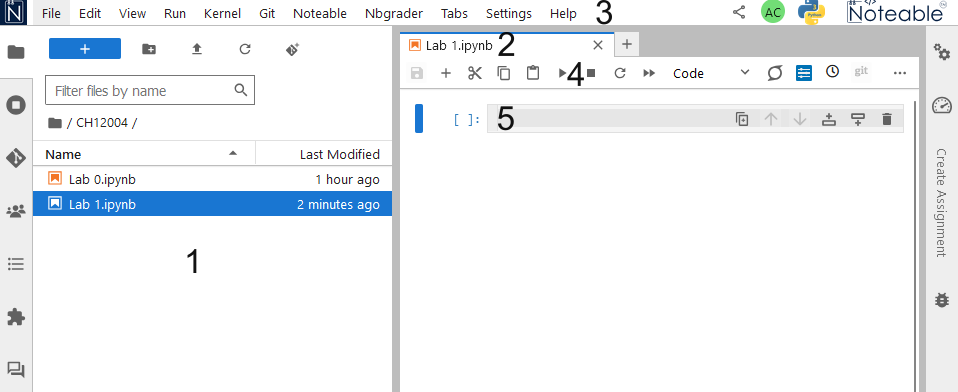
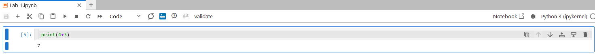
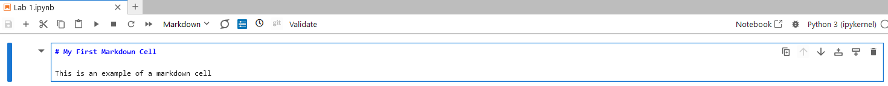
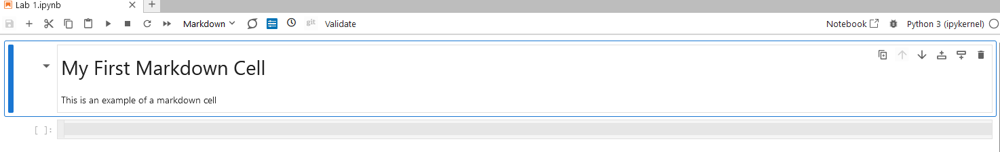
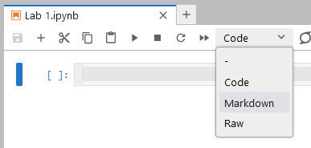
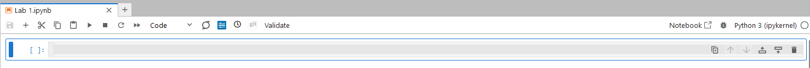
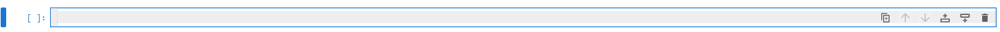
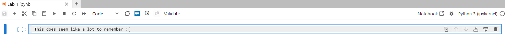

The Jupyter Notebook interface#
Interface elements#
There are a few sections of the Notebook interface that will be useful to know your way around:

The File Browser. From here you can access all your Jupyter notebooks. You can also see when they were last saved/modified.
The name of your Notebook. Please do not leave this as
Untitled.ipynb- You will thank me later!The Notebook Menubar. This contains:
File: File operations, e.g. create a new Notebook, open an existing Notebook, Copy your current Notebook, Save, etc.Edit: Manipulating cellsView: Options for what appears on your screen, and for toggling various aspects on and off.Cell: Executing one of more cells, and manipulating the output of cells.Kernel: Stop, start, etc. the kernel.Help: Access to the built-in help.
The Notebook Toolbar This contains buttons for the most common actions for working with Notebooks. Hovering you mouse over each button will show you a popup with some information about the associated action.
The currently selected cell, here you can type code and execute it.
Cells#
The body of the notebook is made up of input cells. When you open a new notebook it will contain only one empty cell; this is the grey box with In [ ]: to the left.
There are three types of input cells where you can add content to a notebook.
Code cells#
Code cells are the default cell type in a notebook. A code cell can accept code, that can then be executed (run). When the code in a code cell is run, the notebook displays any output generated by that code directly below the corresponding cell.

In the figure above, the code cell has the Python code print(4+3) entered.
This cell has then been run, which executes (runs) the code in the cell: in this instance we add 4 and 3, and print the result.
Markdown cells#
A markdown cell contains text formatted using Markdown, which is a lightweight markup language that can be used for writing formatted text. When a markdown cell is run, the markdown is converted into HTML, with the formatted text then shown in place of the cell. Markdown cells can be used to include formatted text, mathematical equations, images, tables, and more types of rich media.
 This figure shows a markdown cell being edited, with raw markdown entered.
 This figure shows the same cell after it has been run, with the markdown converted to formatted text.
Raw cells#
Input entered into Raw cells is not converted when the cell is run. These cells are usually used to provide additional information for converting Jupyter Notebooks to a different format (e.g., a PDF document). You almost certainly will not need to use Raw cells during this course, but might be curious about this third cell type.
Switching cell type.#
Cells can be switched between code and markdown using the cell type dropdown menu.

You can also switch between cell types in commmand mode (see below) using the keyboard shortcuts Y for code, M for markdown, and R for raw.
Active cells#
A cell is marked as active if it is highlighted. The colour of the highlight depends on whether you are in command mode or edit mode
Command mode#
Command mode is indicated by a blue highlight. When you are in command mode you can use keyboard shortcuts to cut, paste, and move cells, etc. You can see all the keyboard shortcuts under Help → Show Keyboard Shortcuts.

Edit mode#
If you are in command mode then pressing Enter or clicking in the input text area of a cell will switch you to edit mode. Edit mode is indicated by a blue outline around the grey box, and a flashing cursor.

Typing now inserts text into the currently active cell:

To get out of Edit Mode, and back into Command Mode, press Esc or click outside the text entry area.
Running cells#
Each cell can consist of more than one line of input, which is not processed until the cell is executed, or “run”. You can run the currently active cell from the menu bar by clicking Cell → Run Cells, or by clicking on the “play”; icon button in the menu bar. You can also run the currently selected cell using keyboard shortcuts:
ctrl + enter: Run the currently selected cell and keep this cell active.
shift + enter: Run the currently selected cell and move the focus to the next cell below. If there is not a cell below, a new empty cell will be created.
alt + enter or option + enter: Run the currently selected cell and create a new empty cell immediately below.
You can also run every cell in a notebook, from top to bottom, by selecting Kernel → Restart & Run All from the menu bar. This halts your Jupyter notebook and restarts it, before running each cell in sequence from the top down.